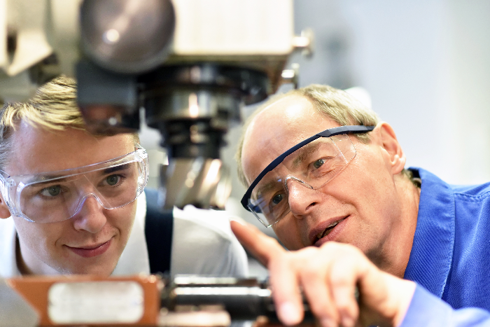

德國教育體系
德國現有八百四十萬學生以及三萬三千五百間公立學校。德國的教育系統並不是由德國政府統一安排的，而是每個聯邦州政府的文化部所安排。文化部的工作是安排教師，安排課程進度等等。這樣一來雖然很難做一致的標準，但是還有一個全德國統一的標準，就是小學的4年制制度。
4年後，學生可以選擇就讀8年制的高級中學或者6年制的文理中學。8年制的高級中學畢業後，學生們可以考入大學接受高等教育。而就讀6年制文理中學的學生們在6年畢業後，可接受職業培訓。值得一提的是，德國的職業培訓70%的時間是在工作崗位上實踐，只有30%的時間是在學校裡學習理論的。這一職業培訓的特色也引起了全球多國的興趣，西班牙，意大利等已經引進了德國理論實踐同時培訓的職業培訓教育方式。而且中國教育部部長陳寶生先生在2018年7月11號與德國聯邦教育部和研究部長卡利切克簽署了: 關於深化高等教育和職業教育領域合作的聯合意向性聲明。
雙軌式職業培訓
一直以來，德國的經濟以及企業，無論大型企業集團，占德國相當比例的中產階級，還是德國傳統手工業企業，均屬世界領先一流水平。能夠如此成功的一個關鍵因素是：德國雙軌式專業人士培訓體制，堅持不懈的對於專業人士著重實踐的培訓。
雙軌即德語的 duale Ausbildung 的的意思是：4年的小學加上6年中學的教育後，學生們接受二元雙重式的培訓：70%的培訓時間用在該行業的一家企業內的實踐工作上，另外30%的時間則用在職業學校理論知識的學習當中。
企業內的培訓內容與職業學校的理論學習內容互相結合，加上各聯邦州政府規定的政策相配合，使得所有人都能夠從中受益。而且學生能夠根據經過嚴格規劃的專業培訓標準與內容，做自己誠心如意的專業選擇。學生們不僅僅只是學習理論知識與模擬實踐，而是直接在工作崗位上得到對所學專業實際體驗。專業培訓和培訓結業證書是得到德國國家即聯邦政府，德國經濟體，以及德國社會所公認的結業證書，由此奠定了個人事業與經濟能力的發展基石。對於企業來說，企業僱主能夠直接根據自己公司的需求，安排所需人才的數量。同時也直接規定企業所需的人才應該學到的培訓內容。雙軌式的職業培訓不僅僅給予德國國家以及整個社會很大的優勢，對於個人能力的發展，企業的發展都帶來了不可言喻的優勢。
德國雙二元雙軌式的職業培訓到底如何運作的呢？在開始之前，學生們能夠在330種行業裡選擇自己的理想職業。當然不是所有的行業都很熱門。
任何能夠及時去諮詢的人，都會避免一股腦兒地選擇學習大家都喜歡的職業，而能更準確地發現真正適合他們的職業。德國公司裡的職業培訓崗位，都給願意接受培訓的人提供了直接諮詢的條件。學徒可以向自己最喜歡的一家或多家公司提出培訓申請，如果他們能通過公司的挑選面試等程序，就能拿到培訓合同。培訓合同的基本內容一般包括：培訓總時長、在此期間具體的學習內容、工資以及每年的假期時長。大多數合同的內容都有詳細的法律規定。
培訓開始後，學生將會在一周中的固定幾天在職業學校學習理論知識，而其他時間則是在企業內部接受技能實踐。學生在職業學校得到一般和專業的基本知識傳授的同時，將在企業內真正實際操作條件下，學習技能的具體操作步驟。一般情況下，學生的工作已經融入到實際的流程當中。各種職業培訓期滿後將會進行最終考試。學生此時必須證明他們所學的本領。每個職業機構所組織的終期考試藉由雇主，學員的代表，以及德國國家級別的職業教師參加。如果考試成功，培訓將以頒發培訓結業證書結束。
畢業後，有許多向技術人員敞開的大門：他們可以在自己的本行工作，甚至三分之二的人留在他們的培訓公司。有些繼續深造而得到了高級職業培訓證書俗稱大師證書。目前，超過一半的同齡年輕人（總計超過50萬人）在德國完成了雙軌式職業培訓。幾乎所有的工作都是在接受過職業培訓後進行的，只有少數人在培訓後沒有就業。超過40萬家德國公司正在積極培訓，大約三分之二的公司都能接受他們所陪訓的學生。
德国的雙軌式职业培训是經過歷史不斷醺修（自1890年以来）而不斷完善的職業教育體制。每種职业還在不斷發展並與职业現代需求所相應。這樣一個成熟可靠的體系是建立在有效的法律框架內，以及可靠合作夥伴的相互合作基礎上的。法律框架由德國立法者定義。立法者而且還對公共职业培训系統做監察和審計工作。職業教育法涵蓋了其他法律尚未規定的所有方面。立法者所制定的法律是与社会各個領域以及工會等等進行不斷的商討後的結果。在雙軌职业培训中，社會各個領域都能各施所想，德國的雇主协会以及德國工会，共同商議制定各行各業不同工種的複雜多樣的職業培训标准與基礎。此外，他們還監督培訓課程，並作為考試委員會的參與者，嚴格監督培訓結果。除了國家政府作為立法者和社會夥伴外，德國工會以及德國商會也發揮著重要作用。作為一個咨詢機構，他們為培訓公司和培訓人員提供咨詢、檢查和資格認證。他們還為每個專業組織期末考試。所有人都在致力於培訓標準的進一步發展，以使職業培訓體系能夠跟進未來。此外，他們還向培訓者提供各種信息服務，幫助他們做好自己的職業定位。
得益於合格的專業人才，實現可持續經濟和社會成功發展不僅僅只在德國有效。德國雙軌培訓制度的原則，可以配合其他國家當地條件，作為其他國家職業培訓的基礎。政治、經濟和社會夥伴共同合作。在工作過程中相互學習。對於國家標準的發展，培訓合格的專業人才的發展空間極其之大。